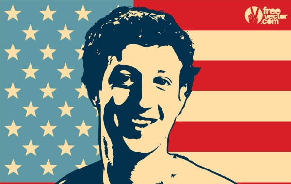

Sejarah Mark Zuckeberg
Nama lengkap Mark Zuckerberg adalah Mark Elliot Zuckerberg. Mark Zuckerberg lahir pada 14 Mei 1984 di kawasan Dobbs Ferry, Westchester Country, New York. Ia merupakan anak dari pasangan Edward Zuckerberg adalah seorang dokter gigi dan ibunya Karen Zuckerberg seorang psikolog. Ia adalah anak kedua dari empat bersaudara. Sejak kecil, Zuckerberg memang suka sekali mengutak-atik komputer, mencoba berbagai program komputer dan juga belajar membuatnya. Ayahnya sendiri membekali Zuckerberg komputer sejak ia berusia 8 tahun. Beranjak remaja Zuckerberg menjadi seorang programmer komputer yang cerdas.

Berdirinya Facebook
Mark Zuckerberg adalah anggota Alpha Epsilon Pi, pada awalnya Zuckerberg hanya seorang mahasiswa di Universitas Harvard. Ia kemudian mencoba membuat suatu sistem jejaring sosial untuk kelasnya. Akan tetapi setelah ia membuat sistem tersebut, ternyata semakin banyak saja orang yang mau tergabung di dalamnya. Sehingga sistem tersebut lama-lama telah menjaring universitas terdekat dari tempat kuliahnya dan ini adalah awal dari Facebook yang saat ini kita kenal.
Dari situasi ini Zuckerberg memiliki inisiatif untuk bisa mengembangkan sistem jejaring tersebut, awal mulanya Zuckerberg mengembangkan sistem ini dan memberikan nama Facebook. Zuckerberg bersama teman – temannya kemudian menyewa tempat di Palo Alto, California sebagai lokasi untuk mengembangkan Facebook. Dikarenakan keasyikan untuk mengembangkan proyek Facebook hingga Zuckerberg lupa dengan kuliahnya. Ia pun dihadapkan pada pilihan yang sangat sulit, yakni antara memilih pendidikannya atau berbisnis proyek yang sedang ia kembangkan.